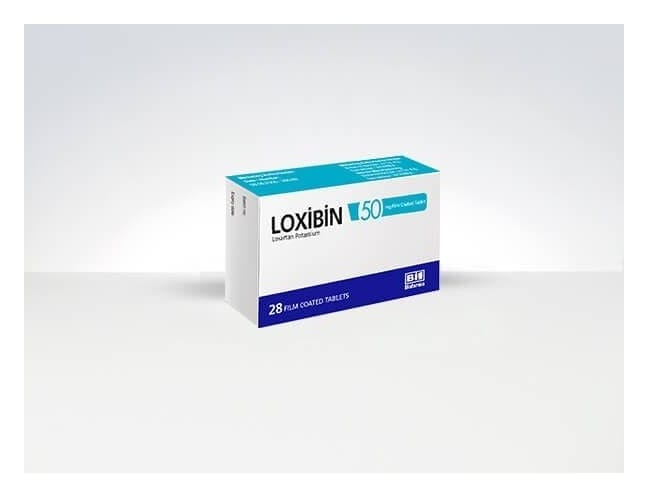

Loxibin 50 mg Film Kaplı Tablet, 56 Adet

Ne için kullanılır
KT · Bölüm 1LOXİBİN®anjiyotensin II reseptör antagonistleri (ARB) denilen bir ilaç grubunda yer alan tansiyon düşürücü (antihipertansif) bir ilaçtır. LOXİBİN®50 mg film kaplı tabletler beyaz renkli, yuvarlak, çentikli film kaplı tabletlerdir. LOXİBİN®28 ve 56 tabletlik ambalajlarda kullanıma sunulmuştur. Film kaplı tablet içerisinde sığır sütünden elde edilen laktoz monohidrat bulunmaktadır.
Anjiyotensin II vücutta üretilen bir maddedir; kan damarlarındaki reseptörlere bağlanarak onların daralmalarına yol açar. Bunun sonucunda kan basıncı yükselir. Losartan anjiyotensin II’ nin bu reseptörlere bağlanmasını engelleyerek kan damarlarının gevşemesine neden olur; böylelikle kan basıncını düşürür. Losartan kan basıncı yüksek olan tip 2 diyabetli hastalarda böbrek fonksiyonunda azalmayı yavaşlatır.
LOXİBİN®aşağıdaki durumlarda kullanılır: • Yetişkinlerde yüksek tansiyonu (hipertansiyon) olan hastaların kan basıncını düşürmek için kullanılır. Kalbiniz atarken ve gevşerken kan damarlarınızda kanın uyguladığı güç kan basıncıdır. Eğer bu güç çok fazlaysa kan basıncınız yüksek (tansiyonunuz yüksek) demektir. LOXİBİN®kan damarlarınızın gevşemesini sağlar ve böylece kan basıncınız düşer. • Günde ≥0,5 g proteinüri (idrarda anormal miktarda proteinin bulunduğu bir durum) ve böbrek fonksiyonunda bozulmaya dair laboratuvar kanıtları olan hipertansif (tansiyonu yüksek) tip 2 diyabetik (şekeri olan) hastalarda böbrekleri korumak için kullanılır. • Sol ventrikül kalınlaşması (kalbin sol karıncığının kalınlaşması) ve yüksek kan basıncı (yüksek tansiyonu) olan hastalarda LOXİBİN®’in inme riskini azalttığı gösterilmiştir (“LIFE endikasyonu”).